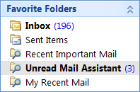

Properly organized mail can have a positive impact on awareness about issues related to work. Often, it is about reading a single message in a nested inbox folder that can make the difference. Sometimes I am so involved in my current work that I do not pay attention to a lot of mail. So I was thinking of a way to organize my mail, so that I can tell at a glance which mail to read first.
Often, a well organized inbox is the result of multiple overlapping rules to sort mails into folders. But there are criteria that can cut across this organization of mail into folders. For example, mail sent directly to me is always important; mail from my manager and mail about my current product is mostly important.
I happened to read about the use of bayesian inference and naive bayes classifiers to classify spam. Being faced with this issue of efficiently organizing my mailbox at work, I set out to try organizing my inbox using bayesian inference. Since I use Microsoft Outlook as my mail client, I wrote an addin that would hook into the new mail event of the Outlook object model and classify mail as it arrived.
The addin (created using Visual Studio Tools for Office) first learns a classification model on startup. It goes through mail for the past two months and learns features about the mail items I read and the mail items I leave unread. (I have this habit of leaving unread mail. Some people have the habit of marking stale mail as read at regular intervals. So this way of learning features would not work for them. Anyways, this is a deficiency of the mail client, not the method itself, since the client can mark mail that was bulk marked as read differently).
This model of read and unread features is updated every half an hour during the day. Incoming mail is queued and classified on a background thread. Mail that is predicted as "would be read" is marked under a category. During night, only classification happens. This is because learning data during the night would make wrong assumptions as most delivered mail would be left unread till morning. For purposes of learning the model, sent mail is considered mail that has been read.
One thing to note about the organization of my mailbox is its division into two broad categories: A set of folders that is about my immediate work (Inbox) and another set of folders that contains mails from large generic distribution lists (Lists). Learning happens from content in my Inbox only. However classification is applied to all incoming mail. This way, I intend to classify mail sent to distribution lists based on its relation to my work.
The addin creates three search folders:

1. Mail with me on To or Cc
2. Mail in inbox marked "Important"
3. Mail categorized by the addin.
These search folders are designed to filter mail I should read first. Incoming mail is flagged by the addin
and is available under the Unread Mail Assistant folder. Bayesian inference performs reasonably well
at predicting whether I would read a particular piece of incoming mail. Though I have not tried to quantify
this efficiency, I have noticed that most classified mail are those that I should read (with one
small exception. I happen to subscribe to a distribution list that is very generic and mostly unrelated to
work. So classification of mails sent to this list is rather unsatisfactory). There have been a few cases
where see some mail item that I would like to have read, but was not classified as Good to Read when
it arrived. But many times this addin has brought to my notice mail items that I would have otherwise
missed.
A specific example of how mail gets classified can be found below.
Detailed Implementation
Given a set of features, inference predicts the class as the classification that has the highest score:
If we assume naive bayesian inference, the above equation can be decomposed as
The term P(Cv) biases the prediction based on the ratio of read mail to unread mail. In other words, this term aids the following kind of inference: given a mail item, without looking at its features one can say it will probably be unread because 70% of mail in the inbox is unread. Empirically it was noticed that this bias unnecessarily skews predictions. Hence we remove this bias. Mathematically this translates to assuming P(C=Read) = P(C=Unread) = 0.5. We also transform the equation to use logarithms for better floating point accuracy. The equation now becomes:

One more empirical observation is the effect of dependence between features. A mail containing keyword-1 keyword-2 keyword-3 has a noticeably different probability of being read than the probability calculated by the product of the probability of being read given the occurrence of keyword-1, keyword-2 and keyword-3 separately. This exact calculation of the probability of dependent features aids better prediction. The equation needs to be modified to take into account dependent features. In the above equation if features f1 and f2 are dependent the equation is transformed to:
In effect the final equation represents a part joint bayes and part naive bayes classifier without inherent bias.
In the implementation, the probabilities required for prediction are obtained by first indexing the data and then querying for count of mail items that match a certain criteria. The model used for classification consists of four indices:
1. An index of senders in read mail items.
2. An index of senders in unread mail items.
3. An index of words in read mail items.
4. An index of sender in unread mail items.
Indices (1) and (2) are used to calculate the probability that the item is sent by a person when assumed it is read, unread respectively. Indices (2) and (3) are created as inverted lists. These are used to calculate the probability of occurrence of a word/group of words when the mail item is assumed to be read, unread respectively.
The model is created when the Outlook mail client is launched. This model creation happens in a low priority background thread so as not to block the user. Mail items that arrive during model creation are queued for classification and they are classified after the model has been built. The model is updated in the background every half an hour (again in a background thread). This is done to take into account recent mail that was read/left unread. When subject lines are indexed, they are normalized and each word is stemmed using the Porter stemmer.
One added advantage of calculating the probability of dependent features explicitly is that replies to a mail that was read has a high chance of being classified as Must Read. As an example, when I send a mail to a distribution list, the mail will first be added to the sent items folder. When the model is updated, the mail item will be learnt and indexed in the read indices. As a result, when someone replies to the mail, the reply has a high chance of being classified as Must Read because the exact combination of words in it subject has already been classified as read.
As a specific example, consider two new mail items with subject lines "office mobile status for week 36" and "office mobile team priorities". The first mail is classified using "office mobile status for week" and "36" as features since "office mobile status for week" would have already appeared a few times in my inbox. However the second mail item will be classified using "office mobile", "team" and "priorities" as separate features. Hence the prediction system specializes when possible and generalizes when there is not enough specific data.
My mail box contains around 7500 mail items that are two months old or newer. This number is probably not sufficient to learn a good generalizing classifier using naive bayesian classification alone. Hence this approach tries to combine naive and joint bayesian inference to overcome the lack of sufficient data
The approach of hooking in to the new mail event does not scale too well because the event is not fired when more than 16 mail items are delivered at a time (this happens when one syncs after a momentary loss of connectivity). Ideally this classification should be done on the mail server (Microsoft Exchange Server). Nevertheless, this way of hooking into the new mail event is quite sufficient since my machine at work runs Outlook client 24x7 and it is always connected to the corpnet/internet.
Future directions
1. I will need to try using the multinomial event model instead of the multivariate Bernoulli event model. This model is reported to produce better results (I learnt this from Andrew Ng's lectures).
(I will be happy to send across the source code if you send me a mail).
 This is the approximation obtained by the GA employing a floating point representation:
This is the approximation obtained by the GA employing a floating point representation: